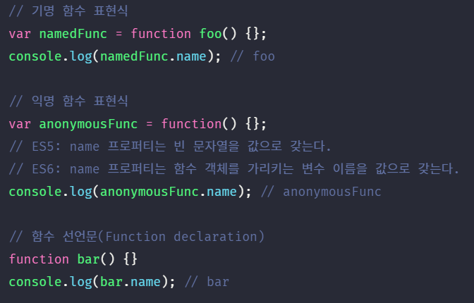

1. 일급 객체 #
아래와 같은 조건을 만족하는 객체를 일급 객체라 한다
- 무명의 리터럴로 생성할 수 있다. 즉, 런타임에 생성이 가능하다.
- 변수나 자료 구조(객체, 배열 등)에 저장할 수 있다.
- 함수의 매개 변수에게 전달할 수 있다.
- 함수의 결과값으로 반환할 수 있다.
자바스크립트의 함수는 아래 예제와 같이 위의 조건을 모두 만족하므로 일급 객체이다.
함수가 일급 객체라는 것은 함수를 객체와 동일하게 사용할 수 있다는 의미다. 객체는 값이므로 함수는 값과 동일하게 취급할 수 있다. 따라서 함수는 값을 사용할 수 있는 곳(변수 할당문, 객체의 프로퍼티 값, 배열의 요소, 함수 호출의 인수, 함수 반환문)이라면 어디서든지 리터럴로 정의할 수 있으며 런타임에 함수 객체로 평가된다.
일급 객체로서 함수가 가지는 가장 큰 특징은 일반 객체와 같이 함수의 매개 변수에 전달할 수 있으며 함수의 결과값으로 반환할 수도 있다는 것이다. 이는 함수형 프로그래밍을 가능케하는 자바스크립트의 장점 중에 하나이다.
함수는 객체이지만 일반 객체와는 차이가 있다. 일반 객체는 호출할 수 없지만 함수 객체는 호출할 수 있다. 그리고 함수 객체는 일반 객체에는 없는 함수 고유의 프로퍼티를 소유한다.
2. 함수 객체의 프로퍼티 #
함수는 객체이다. 따라서 함수도 프로퍼티를 가질 수 있다. 브라우저 콘솔에서 console.dir 메소드를 사용하여 함수 객체의 내부를 살펴보자.

일반 객체에는 없는 arguments, caller, length, name, prototype, __proto__ 프로퍼티가 함수 객체에는 존재한다. square 함수의 모든 프로퍼티의 프로퍼티 어트리뷰트를 Object.getOwnPropertyDescriptors 메소드로 확인해 보면 아래와 같다.
arguments, caller, length, name, prototype 프로퍼티는 모두 함수 객체의 데이터 프로퍼티이다. 하지만 __proto__는 접근자 프로퍼티이며 함수 객체의 프로퍼티가 아닌 Object.prototype 객체의 프로퍼티를 상속받은 것을 알 수 있다. 상속에 대해서는 19장에서 자세히 살펴보도록 하자.
2.1. arguments 프로퍼티 #
함수 객체의 arguments 프로퍼티 값은 arguments 객체이다. arguments 객체는 함수 호출 시 전달된 인수들의 정보를 담고 있는 순회 가능한(iterable) 유사 배열 객체이며 함수 내부에서 지역 변수처럼 사용된다. 함수 외부에서는 참조할 수 없다.
- arguments 프로퍼티
- 함수 객체의 arguments 프로퍼티는 현재 일부 브라우저에서 지원하고 있지만 ES3부터 표준에서 폐지되었다. 따라서 Function.arguments와 같은 사용 방법은 권장되지 않으며 함수 내부에서 지역 변수처럼 사용할 수 있는 arguments 객체를 참조하도록 한다.
자바스크립트는 함수의 매개변수와 인수의 개수가 일치하는지 확인하지 않는다. 따라서 함수 호출 시 매개변수 개수만큼 인수를 전달하지 않아도 에러가 발생하지 않는다.
함수를 정의할 때 선언한 매개변수는 함수 몸체 내부에서 변수와 동일하게 취급된다. 즉, 함수가 호출되면 함수 몸체 내에서 암묵적으로 매개변수가 선언되고 undefined로 초기화된 이후 인수가 할당된다.
선언된 매개변수의 개수보다 인수를 적게 전달했을 경우(multiply(), multiply(1)) 인수가 전달되지 않은 매개변수는 undefined로 초기화된 상태를 유지한다. 매개변수의 개수보다 인수를 더 많이 전달한 경우(multiply(1, 2, 3)) 초과된 인수는 무시된다.
그렇다고 초과된 인수가 그냥 버려지는 것은 아니다. 모든 인수는 암묵적으로 arguments 객체의 프로퍼티로 보관된다. 위 예제를 브라우저 콘솔에서 실행해 보자.

arguments 객체는 인수를 프로퍼티 값으로 소유하며 프로퍼티 키는 인수의 순서를 나타낸다. arguments 객체의 callee 프로퍼티는 호출되어 arguments 객체를 생성한 함수, 즉 함수 자신을 가리키고 arguments 객체의 length 프로퍼티는 인수의 개수를 가리킨다.
- arguments 객체의 Symbol 프로퍼티
- arguments 객체의 Symbol 프로퍼티는 arguments 객체를 순회 가능한 자료 구조인 이터러블로 만들기 위한 프로퍼티다. Symbol.iterator를 프로퍼티 키로 사용한 메소드를 구현하는 것에 의해 이터러블이 된다. 이에 대해서는 29장에서 자세히 살펴보기로 하자.
선언된 매개변수의 개수와 함수 호출 시에 전달하는 인수의 개수를 확인하지 않은 자바스크립트의 특성때문에 함수 호출가 호출되면 인수 개수를 확인하고 이에 따라 함수의 동작을 달리 정의할 필요가 있을 수 있다. 이때 유용하게 사용되는 것이 arguments 객체이다.
arguments 객체는 매개변수 개수를 확정할 수 없는 가변 인자 함수를 구현할 때 유용하게 사용된다.
arguments 객체는 배열의 형태로 인자 정보를 담고 있지만 실제 배열이 아닌 유사 배열 객체(array-like object)이다. 유사 배열 객체란 length 프로퍼티를 가진 객체로 for 문으로 순회할 수 있는 객체를 말한다.
- 유사배열객체와 이터러블
- ES6에서 도입된 이터레이션 프로토콜을 준수하면 순회 가능한 자료 구조인 이터러블이 된다. 이터러블의 개념이 없었던 ES5에서 arguments 객체는 유사 배열 객체로 구분되었다. 하지만 이터러블이 도입된 ES6부터 arguments 객체는 유사 배열 객체이면서 동시에 이터러블이다.
유사 배열 객체는 배열이 아니므로 배열 메소드를 사용할 경우 에러가 발생한다. 따라서 배열 메소드를 사용하려면 Function.prototype.call, Function.prototype.apply를 사용해 간접 호출해야 하는 번거로움이 있다. 간접 호출과 배열에 대해 아직 살펴보지 않았으므로 지금은 참고로만 알아두도록 하자. 간접 호출에 대해서는 22장에서, 배열에 대해서는 27장에서 자세히 살펴보자!

이러한 번거로움을 해결하기 위해 ES6에서는 Rest 파라미터를 도입했다.
ES6 Rest 파라미터의 도입으로 모던 자바스크립트에서는 arguments 객체의 중요성이 이전 같지는 않지만 언제나 ES6만을 사용하지는 않을 수 있기 때문에 알아둘 필요가 있다. arguments 객체와 Rest 파라미터에 대해서는 26장에서 좀더 자세히 살펴보자.
2.2. caller 프로퍼티 #
caller 프로퍼티는 ECMAScript 스펙에 포함되지 않은 비표준 프로퍼티이다. 이후 표준화될 예정도 없는 프로퍼티이므로 사용하지 말고 참고로만 알아두자. 관심이 없다면 지나쳐도 좋다.
함수 객체의 caller 프로퍼티는 함수 자신을 호출한 함수를 가리킨다.
함수 호출 foo(bar)의 경우, bar 함수를 foo 함수 내에서 호출했다. 이때 bar 함수의 caller 프로퍼티는 bar 함수를 호출한 foo 함수를 가리킨다. 함수 호출 bar()의 경우, bar 함수를 호출한 함수는 없다. 따라서 caller 프로퍼티는 null을 가리킨다.
2.3. length 프로퍼티 #
함수 객체의 length 프로퍼티는 함수 정의 시 선언한 매개변수의 개수를 가리킨다.
arguments 객체의 length 프로퍼티와 함수 객체의 length 프로퍼티의 값은 다를 수 있으므로 주의하여야 한다. arguments 객체의 length 프로퍼티는 인자의 개수를 가리키고, 함수 객체의 length 프로퍼티는 매개변수의 개수를 가리킨다.
2.4. name 프로퍼티 #
함수 객체의 name 프로퍼티는 함수 이름을 나타낸다. name 프로퍼티는 ES6 이전까지는 비표준이었지만 ES6에서 정식 표준이 되었다.
name 프로퍼티는 ES5와 ES6에서 동작을 달리 하므로 주의하기 바란다. 익명 함수 표현식의 경우, ES5에서 name 프로퍼티는 빈 문자열을 값으로 갖는다. 하지만 ES6에서는 함수 객체를 가리키는 식별자를 값으로 갖는다.

함수 이름과 함수 객체를 가리키는 식별자는 의미가 다르다는 것을 잊지 말기 바란다. 함수를 호출할 때는 함수 이름이 아닌 함수 객체를 가리키는 식별자로 호출한다.
2.5. __proto__ 프로퍼티 #
모든 객체는 [[Prototype]]이라는 내부 슬롯을 갖는다. [[Prototype]] 내부 슬롯은 객체 지향 프로그래밍의 상속을 구현하는 프로토타입 객체를 가리킨다. 프로토타입 객체에 대해서는 19장에서 자세히 살펴보자!
__proto__ 프로퍼티는 [[Prototype]] 내부 슬롯이 가리키는 프로토타입 객체에 접근하기 위해 사용하는 접근자 프로퍼티이다. 내부 슬롯에는 직접 접근할 수 없고 간접적인 접근 방법을 제공하는 경우에 한하여 접근할 수 있다. [[Prototype]] 내부 슬롯에도 직접 접근할 수 없으며 __proto__ 접근자 프로퍼티를 통해 간접적으로 프로토타입 객체에 접근할 수 있다.
- hasOwnProperty 메소드
- hasOwnProperty 메소드는 이름에서 알 수 있듯이 전달받은 프로퍼티 키가 객체 고유의 프로퍼티 키인 경우에만 true를 반환하고 상속받은 프로토타입의 프로퍼티 키인 경우 false를 반환한다.
2.6. prototype 프로퍼티 #
prototype 프로퍼티는 함수 객체만이 소유하는 프로퍼티이다. 일반 객체에는 prototype 프로퍼티가 없다.
prototype 프로퍼티는 함수가 객체를 생성하는 생성자 함수로 사용될 때, 생성자 함수가 생성할 인스턴스의 프로토타입 객체를 가리킨다.